using Pkg
lab_dir = dirname(@__FILE__)
Pkg.activate(lab_dir)
Pkg.instantiate()CEVE 543 Fall 2025 Assigned 1: Nonstationary Rainfall Frequency Analysis
Houston Daily Rainfall Extremes and Climate Change
Tasks
1 Task 1:Stationary GEV Analysis
1.1 Data Setup and Station Selection
1.1.1 Loading Required Packages
First, load all the Julia packages I will use in this analysis:
using Downloads
using TidierFiles
using TidierData
using DataFrames
using Extremes
using Turing
using Optim
using ColorSchemes
using CairoMakie
using GeoMakie
using Random
using MCMCChains
using Makie
using Unitful
using ArviZ
using NCDatasets
using LinearAlgebra: I
using Distributions
using Statistics
using LaTeXStrings# Configure plotting backend
CairoMakie.activate!(type = "svg")
ENV["DATAFRAMES_ROWS"] = 5# Utility functions
include("util.jl")
rainfall_conversion = Makie.UnitfulConversion(u"inch")
rng = MersenneTwister(543)1.1.2 Loading NOAA Precipitation Data
Like previous labs, I will download and read the Texas precipitation data:
fname = joinpath(lab_dir,"dur01d_ams_na14v11.txt")
url = "https://hdsc.nws.noaa.gov/pub/hdsc/data/tx/dur01d_ams_na14v11.txt"
if !isfile(fname)
Downloads.download(url, fname)
end- 1
- Check if data file already exists locally
- 2
- Download the file if it doesn’t exist
stations, rainfall_data = read_noaa_data(fname)
display(stations)
display(rainfall_data)- 1
- Read and parse the NOAA precipitation data
816×7 DataFrame
811 rows omitted
| Row | stnid | noaa_id | name | state | latitude | longitude | years_of_data |
|---|---|---|---|---|---|---|---|
| Int64 | String | String | String | Float64 | Float64 | Int64 | |
| 1 | 1 | 60-0011 | CLEAR CK AT BAY AREA BLVD | TX | 29.4977 | -95.1599 | 30 |
| 2 | 2 | 60-0019 | TURKEY CK AT FM 1959 | TX | 29.5845 | -95.1869 | 30 |
| 3 | 3 | 60-0022 | ARMAND BYU AT GENOARED BLF RD | TX | 29.6345 | -95.1123 | 31 |
| ⋮ | ⋮ | ⋮ | ⋮ | ⋮ | ⋮ | ⋮ | ⋮ |
| 815 | 815 | 87-0031 | SECO CREEK AT MILLER RANCH | TX | 29.5731 | -99.4028 | 20 |
| 816 | 816 | 99-2048 | COTULLA | TX | 28.4567 | -99.2183 | 102 |
61925×4 DataFrame
61920 rows omitted
| Row | stnid | date | year | rainfall |
|---|---|---|---|---|
| Int64 | Date | Int64 | Quantity…? | |
| 1 | 1 | 1987-06-11 | 1987 | 6.31 inch |
| 2 | 1 | 1988-09-02 | 1988 | 5.46 inch |
| 3 | 1 | 1989-08-01 | 1989 | 11.39 inch |
| ⋮ | ⋮ | ⋮ | ⋮ | ⋮ |
| 61924 | 816 | 2016-08-20 | 2016 | 3.44 inch |
| 61925 | 816 | 2017-09-25 | 2017 | 2.72 inch |
Choose Houston area station for analysis.
target_location = "Houston George Bush Intercontinental Airport"
target_lon = -95.3359296
target_lat = 29.9732036
# Haversine formula for great circle distance with units
function calc_distance(lon1, lat1, lon2, lat2)
R = 6378.0u"km"
# Convert degrees to radians
φ1 = deg2rad(lat1)
φ2 = deg2rad(lat2)
Δφ = deg2rad(lat2 - lat1)
Δλ = deg2rad(lon2 - lon1)
# Haversine formula
a = sin(Δφ / 2)^2 + cos(φ1) * cos(φ2) * sin(Δλ / 2)^2
c = 2 * atan(sqrt(a), sqrt(1 - a))
return R * c
end
stations = @chain stations begin
@mutate(distance_km = calc_distance(longitude, latitude, !!target_lon, !!target_lat))
@arrange(distance_km)
end
stations- 1
- Descriptive name for my houston area target location
- 2
- Houston George Bush Intercontinental Airport’s longitude coordinate (negative means west of Greenwich)
- 3
- Houston George Bush Intercontinental Airport’s latitude coordinate (positive means north of equator)
- 4
- Define a function that calculates great circle distance between two lat/lon points
- 5
- Earth’s radius in kilometers (using proper units!)
- 6
- Convert the first latitude from degrees to radians (φ is Greek phi)
- 7
- Convert the second latitude to radians
- 8
- Calculate difference in latitudes (Δ is Greek delta, means “change in”)
- 9
- Calculate difference in longitudes (λ is Greek lambda)
- 10
- First part of Haversine formula: angular distance component
- 11
- Complete the great circle distance calculation
- 12
- Multiply by Earth’s radius to get distance in kilometers
- 13
- Start a TidierData pipeline with our stations DataFrame
- 14
-
Add distance column using
!!to inject external variables into the TidierData expression - 15
- Sort the stations by distance (closest first)
- 16
- Display the sorted stations (shows closest ones first due to ENV row limit)
816×8 DataFrame
811 rows omitted
| Row | stnid | noaa_id | name | state | latitude | longitude | years_of_data | distance_km |
|---|---|---|---|---|---|---|---|---|
| Int64 | String | String | String | Float64 | Float64 | Int64 | Quantity… | |
| 1 | 782 | 79-0061 | HOUSTON INTERCONT AP | TX | 29.98 | -95.36 | 48 | 2.44121 km |
| 2 | 387 | 41-4362 | HUMBLE | TX | 30.0 | -95.25 | 60 | 8.80564 km |
| 3 | 6 | 60-0104 | GREENS BYU AT MT HOUSTON PKWY | TX | 29.892 | -95.238 | 31 | 13.0751 km |
| ⋮ | ⋮ | ⋮ | ⋮ | ⋮ | ⋮ | ⋮ | ⋮ | ⋮ |
| 815 | 807 | 79-0125 | EL PASO | TX | 31.7587 | -106.484 | 60 | 1083.1 km |
| 816 | 428 | 41-4931 | LA TUNA 1 S | TX | 31.98 | -106.597 | 69 | 1097.22 km |
1.1.3 Examining the Closest Weather Station
Focus on the closest weather station that near the Houston George Bush Intercontinental Airport and look at its rainfall data:
closest_station = first(stations)
closest_stnid = closest_station.stnid
closest_rainfall = @chain rainfall_data begin
@filter(stnid == !!closest_stnid)
end
closest_rainfall
println("Station NOAA ID: ", closest_station.noaa_id)
println("Station Name: ", closest_station.name)
display(closest_rainfall)- 1
-
Filter rainfall data using
!!to inject the external variable into TidierData
Station NOAA ID: 79-0061
Station Name: HOUSTON INTERCONT AP48×4 DataFrame
43 rows omitted
| Row | stnid | date | year | rainfall |
|---|---|---|---|---|
| Int64 | Date | Int64 | Quantity…? | |
| 1 | 782 | 1970-05-15 | 1970 | 4.23 inch |
| 2 | 782 | 1971-12-01 | 1971 | 3.09 inch |
| 3 | 782 | 1972-03-20 | 1972 | 6.73 inch |
| ⋮ | ⋮ | ⋮ | ⋮ | ⋮ |
| 47 | 782 | 2016-04-17 | 2016 | 9.79 inch |
| 48 | 782 | 2017-08-26 | 2017 | 16.3 inch |
1.1.4 Plotting a Time Series For the Station
Create a time series plot to see how rainfall has changed over time at this station:
plot_time_series(closest_station, closest_rainfall)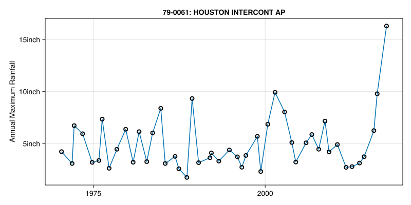
function plot_time_series(station_row, rainfall_df)
# Create time series plot of rainfall data
fig = Figure(size = (800, 400))
ax = Axis(fig[1, 1],
ylabel = "Annual Maximum Rainfall",
title = "$(station_row.noaa_id): $(station_row.name)",
dim2_conversion = rainfall_conversion)
# Plot the time series
lines!(ax, rainfall_df.date, rainfall_df.rainfall)
scatter!(ax, rainfall_df.date, rainfall_df.rainfall,
markersize = 10, marker = :circle, strokewidth = 2, color = :transparent)
fig
end- 1
-
Use string interpolation
$()to insert station ID and name into the plot title - 2
- Apply unit converter to display rainfall in inches instead of deca-inches
- 3
-
Plot using
datecolumn to show precise timing of annual maximum events - 4
- Add hollow circles with transparent fill to emphasize individual data points
1.2 GEV Fitting: Multiple Approaches
Now is the time tocompare different approaches to fitting GEV distributions to understand how estimation methods affect our results.
1.2.1 MLE with Extremes.jl For Validation
First, fit a GEV distribution using maximum likelihood estimation (MLE) with Extremes.jl for the validation:
# Extract clean data for fitting
y = collect(skipmissing(ustrip.(u"inch", closest_rainfall.rainfall)))
# Fit GEV using maximum likelihood estimation (MLE)
ext_fit = gevfit(y)
# Extract parameters
μ_ext = location(ext_fit)[1]
σ_ext = scale(ext_fit)[1]
ξ_ext = shape(ext_fit)[1]
# Display parameters in a DataFrame
params_extremes = DataFrame(
Parameter = ["Location (μ)", "Scale (σ)", "Shape (ξ)"],
Value = [round(μ_ext, digits = 3), round(σ_ext, digits = 3), round(ξ_ext, digits = 3)],
)
println("Extremes.jl GEV parameters:")
params_extremes- 1
- Convert rainfall data to plain numbers, removing units and missing values
- 2
- Fit GEV distribution using maximum likelihood estimation (MLE)
- 3
- Extract location parameter (μ) from the fitted model
- 4
- Extract scale parameter (σ) from the fitted model
- 5
- Extract shape parameter (ξ) from the fitted model
extremes_dist = GeneralizedExtremeValue(μ_ext, σ_ext, ξ_ext)- 6
- Create a distribution object for further analysis and plotting
Distributions.GeneralizedExtremeValue{Float64}(μ=3.7517276015345686, σ=1.4571087397080031, ξ=0.2509577427772232)1.2.2 MLE Using Turning.jl With maximum_likelihood
Secondly, implement maximum likelihood estimation (MLE) using Turing.jl with [maximum_likelihood] workflow:
@model function gev_model(y)
μ ~ Normal(0, 10) # location prior
log_σ ~ Normal(0, 10) # work on log-scale to keep σ>0
ξ ~ Normal(0.0, 0.3) # shape prior (centered near Gumbel, allows ± tails)
σ = exp(log_σ)
y .~ GeneralizedExtremeValue(μ, σ, ξ)
end# Extract MLE parameters
μ_map = map_res.values[:μ]
σ_map = exp(map_res.values[:log_σ])
ξ_map = map_res.values[:ξ]
params_turing_map = DataFrame(
Parameter = ["Location (μ)", "Scale (σ)", "Shape (ξ)"],
Value = [round(μ_map, digits=3), round(σ_map, digits=3), round(ξ_map, digits=3)],
)
println("Turing.jl GEV parameters (MLE):")
params_turing_map- 6
- Create a distribution object for further analysis and plotting
Turing.jl GEV parameters (MLE):3×2 DataFrame
| Row | Parameter | Value |
|---|---|---|
| String | Float64 | |
| 1 | Location (μ) | 3.752 |
| 2 | Scale (σ) | 1.457 |
| 3 | Shape (ξ) | 0.251 |
1.2.3 Build a Distribution Object And Benchmark vs Extremes.jl
Check the MLE from Turning.jl and results from Extreme.jl.
turing_map_dist = GeneralizedExtremeValue(μ_map, σ_map, ξ_map)
# Side-by-side parameter comparison
params_compare = DataFrame(
Method = ["Extremes MLE", "Turing MLE optimized"],
μ = [round(μ_ext, digits=3), round(μ_map, digits=3)],
σ = [round(σ_ext, digits=3), round(σ_map, digits=3)],
ξ = [round(ξ_ext, digits=3), round(ξ_map, digits=3)],
)params_compare2×4 DataFrame
| Row | Method | μ | σ | ξ |
|---|---|---|---|---|
| String | Float64 | Float64 | Float64 | |
| 1 | Extremes MLE | 3.752 | 1.457 | 0.251 |
| 2 | Turing MLE optimized | 3.752 | 1.457 | 0.251 |
1.2.4 Implement Bayesian GEV Inference using MCMC
Now I implemented the Bayesian GEV predition using MCMC. The Houston Airport(IAH) experiences annual rain depth from 1.5 to 5.0 inches mostly. When the typhoon comes, the rain depth will increase. The scale between 0.07 and 0.5 would help to control the spread of the curve. The rain depth increase slowly and change slightly in the near future so the $\sigma$ should not be set large. The shape prior help to control the shape at the right side of the predition line.
@model function gev_model_houston(y)
μ ~ Normal(5.0, 1.5) # location prior (inches)
log_σ ~ Normal(log(1.2), 0.5) # log-scale prior for σ>0
ξ ~ truncated(Normal(0.1, 0.15), -0.2, 0.5) # shape prior, stabilized range
σ = exp(log_σ)
y .~ GeneralizedExtremeValue(μ, σ, ξ) # vectorized likelihood
end
Random.seed!(256)
model = gev_model_houston(y)
# 4 chains × 2000 draws (1000 warmup)
nchains = 4
ndraws = 2000
nwarmup = 1000
chain = sample(
model, NUTS(), MCMCSerial(), ndraws, nchains;
num_warmup = nwarmup, discard_adapt = true, progress = false #keep your flags
)
# Posterior means
μ_bayes = mean(chain[:μ])
σ_bayes = mean(exp.(chain[:log_σ]))
ξ_bayes = mean(chain[:ξ])
# Build a representative posterior-mean distribution
bayes_dist = GeneralizedExtremeValue(μ_bayes, σ_bayes, ξ_bayes)# Convert Turing Chains -> ArviZ InferenceData (same as lab)
posterior_idata = ArviZ.from_mcmcchains(chain)
# Print summary with R̂ and effective sample sizes (bulk/tail)
ArviZ.summarize(posterior_idata)
# plot_trace_diagnostics(posterior_idata, "Primary Station:")
# fig_densities_primary = plot_marginal_densities(posterior_idata, "Primary Station:")
- \(\hat{R}\) values close to 1.0 (indicates chains have converged to same distribution)
- Effective sample sizes (
ess_tailandess_bulk) that are reasonably large (as close to the total number of samples as possible)
# Posterior draws (flatten across chains/iterations)
μ_samps = vec(Array(chain[:μ]))
σ_samps = vec(exp.(Array(chain[:log_σ])))
ξ_samps = vec(Array(chain[:ξ]))
q = (x, p) -> quantile(x, p)
params_cmp = DataFrame(
Parameter = ["μ","σ","ξ"],
MLE = [μ_ext, σ_ext, ξ_ext],
Post_mean = [mean(μ_samps), mean(σ_samps), mean(ξ_samps)],
Post_low = [q(μ_samps, 0.025), q(σ_samps, 0.025), q(ξ_samps, 0.025)],
Post_high = [q(μ_samps, 0.975), q(σ_samps, 0.975), q(ξ_samps, 0.975)]
)
println("\nParameter comparison (MLE vs posterior, 95% CI):")
show(params_cmp, allcols = true) # avoid unsupported kwargs
# --- Return levels: MLE vs posterior (95% CI) ---
rl(p, μ, σ, ξ) = quantile(GeneralizedExtremeValue(μ, σ, ξ), p)
Ts = [5, 10, 25, 50, 100]
ps = 1 .- 1 ./ Ts
# MLE point return levels
rl_mle = [rl(p, μ_ext, σ_ext, ξ_ext) for p in ps]
# Posterior return levels (sample-wise)
n = length(μ_samps)
J = length(Ts)
rl_mat = Array{Float64}(undef, n, J)
@inbounds for i in 1:n
μi, σi, ξi = μ_samps[i], σ_samps[i], ξ_samps[i]
for j in 1:J
rl_mat[i, j] = rl(ps[j], μi, σi, ξi)
end
end
rl_mean = vec(mean(rl_mat; dims = 1))
rl_low = [quantile(view(rl_mat, :, j), 0.025) for j in 1:J]
rl_high = [quantile(view(rl_mat, :, j), 0.975) for j in 1:J]
rl_tbl = DataFrame(
T_years = Ts,
MLE = rl_mle,
Posterior_mean = rl_mean,
Posterior_low = rl_low,
Posterior_high = rl_high
)
println("\nReturn levels (inches): MLE vs posterior (95% CI)")
show(rl_tbl, allcols = true)Parameter comparison (MLE vs posterior, 95% CI): 3×5 DataFrame Row │ Parameter MLE Post_mean Post_low Post_high │ String Float64 Float64 Float64 Float64 ─────┼────────────────────────────────────────────────────── 1 │ μ 3.75173 3.81794 3.3657 4.32114 2 │ σ 1.45711 1.53368 1.18266 1.97954 3 │ ξ 0.250958 0.191364 0.0205682 0.378533 Return levels (inches): MLE vs posterior (95% CI) 5×5 DataFrame Row │ T_years MLE Posterior_mean Posterior_low Posterior_high │ Int64 Float64 Float64 Float64 Float64 ─────┼────────────────────────────────────────────────────────────────── 1 │ 5 6.40551 6.48788 5.58348 7.66314 2 │ 10 8.15864 8.15679 6.83055 10.0216 3 │ 25 10.9023 10.6776 8.49687 14.1487 4 │ 50 13.4038 12.9118 9.77791 18.3236 5 │ 100 16.3643 15.5051 11.0986 23.7709
The table summarized the result about the parameter comparison for MLE and Bayesian posterior with 95% CI. It also reflected the return level difference that are predicted by MLE and Bayesian posterior with 85% CI.
1.3 Compare All Three Methods
Let me combine all the results together and show them in table form for visualizaiton.
params_compare2 = DataFrame(
Method = ["Extremes MLE", "Turing MAP", "Bayesian MCMC (mean)"],
μ = [μ_ext, μ_map, μ_bayes],
σ = [σ_ext, σ_map, σ_bayes],
ξ = [ξ_ext, ξ_map, ξ_bayes],
)
println("Parameter comparison:")
params_compare2
return_periods = [5, 10, 25, 50, 100]
ext_levels = [quantile(extremes_dist, 1 - 1/T) for T in return_periods]
map_levels = [quantile(turing_map_dist, 1 - 1/T) for T in return_periods]
bayes_levels = [quantile(bayes_dist, 1 - 1/T) for T in return_periods]
return_levels_compare = DataFrame(
T_years = return_periods,
Extremes_MLE = round.(ext_levels, digits=3),
Turing_MAP = round.(map_levels, digits=3),
Bayesian_MCMC = round.(bayes_levels, digits=3),
)
println("Return level comparison (inches):")
return_levels_compareParameter comparison:
Return level comparison (inches):5×4 DataFrame
| Row | T_years | Extremes_MLE | Turing_MAP | Bayesian_MCMC |
|---|---|---|---|---|
| Int64 | Float64 | Float64 | Float64 | |
| 1 | 5 | 6.406 | 6.405 | 6.483 |
| 2 | 10 | 8.159 | 8.159 | 8.132 |
| 3 | 25 | 10.902 | 10.902 | 10.584 |
| 4 | 50 | 13.404 | 13.404 | 12.714 |
| 5 | 100 | 16.364 | 16.364 | 15.131 |
Now let me combine all GEV fitting prediction line together, which included the MLE line predicted by Turing.jl, extreme GEV line from Extremes.jl, and Bayesian GEV with Turning.jl using MCMC.
function plot_all_three_with_empirical(station_data, extremes_dist, turing_map_dist, bayes_dist, station_info)
fig = Figure(size = (900, 520))
ax = Axis(fig[1, 1];
xlabel = "Return Period (years)",
ylabel = "Return Level (inches)",
title = "GEV Fits vs Empirical\n$(station_info.noaa_id): $(station_info.name)",
xscale = log10,
dim2_conversion = rainfall_conversion,
)
# --- Smooth theoretical curves ---
T_smooth = 10 .^ range(log10(1.1), log10(250), length = 200)
ext_levels = [quantile(extremes_dist, 1 - 1/T) for T in T_smooth] .* u"inch"
map_levels = [quantile(turing_map_dist, 1 - 1/T) for T in T_smooth] .* u"inch"
bayes_levels = [quantile(bayes_dist, 1 - 1/T) for T in T_smooth] .* u"inch"
lines!(ax, T_smooth, ext_levels; color = :blue, linewidth = 2.0, label = "Extremes MLE")
lines!(ax, T_smooth, map_levels; color = :red, linewidth = 2.0, linestyle = :dash, label = "Turing MLE")
lines!(ax, T_smooth, bayes_levels; color = :green, linewidth = 2.0, linestyle = :dot, label = "Bayesian MCMC (mean)")
# --- Empirical Weibull plotting positions ---
vals = collect(skipmissing(station_data.rainfall))
if !isempty(vals)
sort!(vals)
n = length(vals)
emp_periods = [(n + 1) / (n + 1 - i) for i in 1:n] # T(i) = (n+1)/(n+1 - i)
emp_levels = (vals isa Vector{<:Quantity}) ? vals : vals .* u"inch"
scatter!(ax, emp_periods, emp_levels; color = :black, markersize = 8,
strokewidth = 1.5, marker = :circle, label = "Observed (Weibull)")
end
ax.xticks = [5, 10, 25, 50, 100, 250]
axislegend(ax, position = :rb)
return fig
end
plot_all_three_with_empirical(closest_rainfall, extremes_dist, turing_map_dist, bayes_dist, closest_station)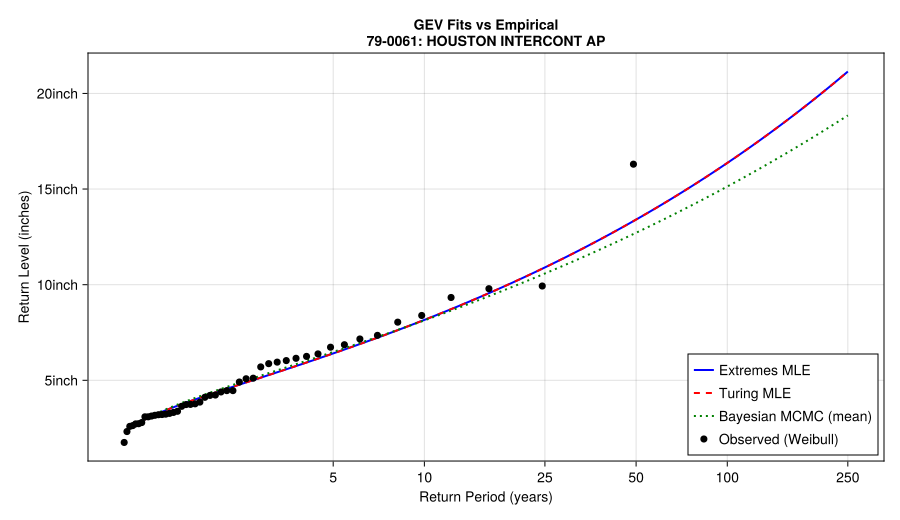
1.4 Calculate 50-year and 100-year Return Period Estimation
rl(p, μ, σ, ξ) = quantile(GeneralizedExtremeValue(μ, σ, ξ), p)
# Posterior draws (flatten chains)
μ_samps = vec(Array(chain[:μ]))
σ_samps = vec(exp.(Array(chain[:log_σ])))
ξ_samps = vec(Array(chain[:ξ]))
# Return-period grid (Lab 3 synthetic-experiment style ticks)
Ts_grid = [2, 5, 10, 25, 50, 100, 200]
ps_grid = 1 .- 1 ./ Ts_grid
# Posterior return levels across the grid
n = length(μ_samps); J = length(Ts_grid)
rl_mat = Matrix{Float64}(undef, n, J)
@inbounds for i in 1:n
μi = μ_samps[i]; σi = σ_samps[i]; ξi = ξ_samps[i]
for j in 1:J
rl_mat[i, j] = rl(ps_grid[j], μi, σi, ξi)
end
end
rl_post_mean = vec(mean(rl_mat; dims = 1))
rl_post_low = [quantile(view(rl_mat, :, j), 0.025) for j in 1:J]
rl_post_high = [quantile(view(rl_mat, :, j), 0.975) for j in 1:J]
# MLE curve over the same grid
rl_mle_curve = [rl(p, μ_ext, σ_ext, ξ_ext) for p in ps_grid]
# Plot
fig = Figure(size = (720, 440))
ax = Axis(fig[1, 1];
xscale = log10,
xlabel = "Return period T (years)",
ylabel = "Return level (inches)",
xticks = (Ts_grid, string.(Ts_grid)),
title = "Return level vs Return period"
)
# 95% posterior credible band
band!(ax, Ts_grid, rl_post_low, rl_post_high, label = "Posterior 95% CI")
# Posterior mean curve
lines!(ax, Ts_grid, rl_post_mean, linewidth = 2, label = "Posterior mean")
# MLE curve
lines!(ax, Ts_grid, rl_mle_curve, linewidth = 2, linestyle = :dash, label = "MLE")
# Highlight T = 50 and 100 (posterior mean and MLE)
i50 = findfirst(==(50), Ts_grid)
i100 = findfirst(==(100), Ts_grid)
scatter!(ax, [Ts_grid[i50], Ts_grid[i100]],
[rl_post_mean[i50], rl_post_mean[i100]];
markersize = 10, label = "Posterior @ 50,100")
scatter!(ax, [Ts_grid[i50], Ts_grid[i100]],
[rl_mle_curve[i50], rl_mle_curve[i100]];
marker = :diamond, markersize = 10, label = "MLE @ 50,100")
axislegend(ax, position = :lt)
fig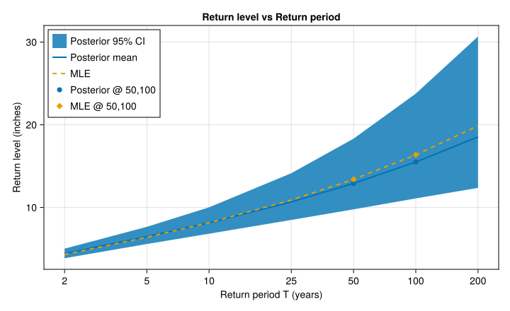
# Highlight T = 50 and 100 (posterior mean and MLE)
i50 = findfirst(==(50), Ts_grid)
i100 = findfirst(==(100), Ts_grid)
# Two posterior value
rl50 = rl_mat[:, i50]
rl100 = rl_mat[:, i100]
# MLE value
mle50 = rl_mle_curve[i50]
mle100 = rl_mle_curve[i100]
# Plot histogram
fig = Figure(size = (900, 360))
ax1 = Axis(fig[1, 1],
xlabel = "50-year Return Level (inches)",
ylabel = "Frequency",
title = "T = 50 years"
)
hist!(ax1, rl50; bins = 30)
vlines!(ax1, [mean(rl50)]; linewidth = 2, label = "Posterior mean")
vlines!(ax1, [mle50]; linewidth = 2, linestyle = :dash, label = "MLE")
axislegend(ax1, position = :rt)
ax2 = Axis(fig[1, 2],
xlabel = "100-year Return Level (inches)",
ylabel = "Frequency",
title = "T = 100 years"
)
hist!(ax2, rl100; bins = 30)
vlines!(ax2, [mean(rl100)]; linewidth = 2, label = "Posterior mean")
vlines!(ax2, [mle100]; linewidth = 2, linestyle = :dash, label = "MLE")
axislegend(ax2, position = :rt)
fig
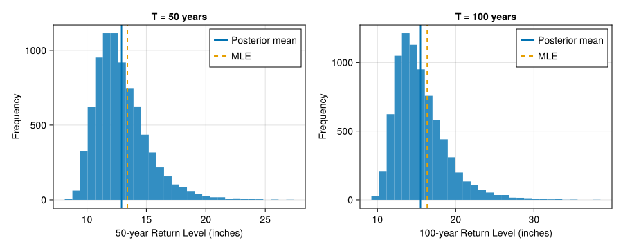
Finished task one.
2 Task 2: Multi-station Regional Analysis
2.1 Get the Nearest 4 Stations
Now is the time to check the precipitation trends for my selected station and its surrounding stations. First let me get the nearest 4 stations.
my_station = closest_station
target_lon = my_station.longitude
target_lat = my_station.latitude
nearest_stations = @chain stations begin
@filter(stnid != 782) # exclude the primary itself
@mutate(distance_km = calc_distance(longitude, latitude, !!target_lon, !!target_lat))
@arrange(distance_km)
end
nearest4 = first(nearest_stations, 4)
nearest_with_distance = @chain nearest4 begin
#@select(noaa_id, name, distance_km, years_of_data)
endprintln("Nearest stations to $(my_station.noaa_id) (stnid=782):")
display(nearest_with_distance)Nearest stations to 79-0061 (stnid=782):4×8 DataFrame
| Row | stnid | noaa_id | name | state | latitude | longitude | years_of_data | distance_km |
|---|---|---|---|---|---|---|---|---|
| Int64 | String | String | String | Float64 | Float64 | Int64 | Quantity… | |
| 1 | 387 | 41-4362 | HUMBLE | TX | 30.0 | -95.25 | 60 | 10.8366 km |
| 2 | 5 | 60-0082 | CYPRESS CK AT KUYKENDAHL RD | TX | 30.0244 | -95.4764 | 31 | 12.2614 km |
| 3 | 378 | 41-4323 | HOUSTON INDEP HTS | TX | 29.8667 | -95.4167 | 73 | 13.7474 km |
| 4 | 6 | 60-0104 | GREENS BYU AT MT HOUSTON PKWY | TX | 29.892 | -95.238 | 31 | 15.3122 km |
Then I try to plot the annual precipitaion data together to check if all five stations have the same precipation data trend.
2.2 Plot The Annual Data
my_station = closest_station
my_stnid = my_station.stnid # Stadion ID
station_data_list = [
(my_station, @chain rainfall_data begin
@filter(stnid == !!my_stnid)
@arrange(date)
end)
]
for row in eachrow(nearest4)
row_id = row.stnid
df = @chain rainfall_data begin
@filter(stnid == !!row_id)
@arrange(date)
end
push!(station_data_list, (row, df))
end
# Plot
function plot_multiple_stations(station_data_list)
fig = Figure(size=(900, 450))
ax = Axis(fig[1, 1], xlabel="Year", ylabel="Annual Max Rainfall (inches)",
title="Annual Maximum Rainfall for HOUSTON INTERCONT AP and 4 Surrounding Stations")
colors = distinguishable_colors(length(station_data_list))
for (i, (station, data)) in enumerate(station_data_list)
years = data.year
rain = ustrip.(u"inch", data.rainfall)
lines!(ax, years, rain, color=colors[i], label=station.name)
scatter!(ax, years, rain, color=colors[i], markersize=6)
end
axislegend(ax; position=:lt)
return fig
endplot_multiple_stations(station_data_list)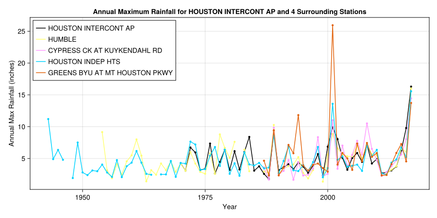
2.3 Fitting GEV to Multiple Stations
Now with the station datat from my station and the nearest 4, I could fit the GEV predition with Extreme.jl to them.
# Selected station and the surround 4
station_rows = vcat([my_station], collect(eachrow(nearest4)))
# GEV fitting
function fit_station_gev(row)
target_stnid = row.stnid
st_precip = @chain rainfall_data begin
@filter(stnid == !!target_stnid)
@arrange(date)
end
y = collect(skipmissing(ustrip.(u"inch", st_precip.rainfall)))
if isempty(y)
error("Station $(row.noaa_id) has no valid annual-maximum rainfall data.")
end
fit = gevfit(y)
μ = location(fit)[1]
σ = scale(fit)[1]
ξ = shape(fit)[1]
return (
distribution = GeneralizedExtremeValue(μ, σ, ξ),
params = (μ = μ, σ = σ, ξ = ξ),
info = (stnid = row.stnid, noaa_id = row.noaa_id, name = row.name, n_years = length(y))
)
end
# Fit for each 5 stations
fit_results = map(fit_station_gev, station_rows)
station_fits = [r.distribution for r in fit_results]
station_infos = [r.info for r in fit_results]
station_params = [r.params for r in fit_results]
params_df = DataFrame(
NOAA_ID = [info.noaa_id for info in station_infos],
Name = [info.name for info in station_infos],
Years = [info.n_years for info in station_infos],
μ = round.([p.μ for p in station_params], digits=3),
σ = round.([p.σ for p in station_params], digits=3),
ξ = round.([p.ξ for p in station_params], digits=3),
)
println("GEV parameters (MLE) for primary + 4 nearest stations:")
display(params_df)GEV parameters (MLE) for primary + 4 nearest stations:5×6 DataFrame
| Row | NOAA_ID | Name | Years | μ | σ | ξ |
|---|---|---|---|---|---|---|
| String | String | Int64 | Float64 | Float64 | Float64 | |
| 1 | 79-0061 | HOUSTON INTERCONT AP | 48 | 3.752 | 1.457 | 0.251 |
| 2 | 41-4362 | HUMBLE | 60 | 3.601 | 1.655 | 0.13 |
| 3 | 60-0082 | CYPRESS CK AT KUYKENDAHL RD | 31 | 3.469 | 1.752 | 0.351 |
| 4 | 41-4323 | HOUSTON INDEP HTS | 73 | 3.44 | 1.311 | 0.273 |
| 5 | 60-0104 | GREENS BYU AT MT HOUSTON PKWY | 31 | 3.89 | 1.669 | 0.431 |
The plot and tables following shows the GEV fitting results about different stations.
# Set the return period
return_periods = [5, 10, 25, 50, 100]
function return_level(dist::GeneralizedExtremeValue, T)
p = 1 - 1/T # returen period model
return quantile(dist, p)
end
rl_rows = Vector{NamedTuple}()
for (dist, info) in zip(station_fits, station_infos)
for T in return_periods
push!(rl_rows, (NOAA_ID=info.noaa_id, Name=info.name, Years=info.n_years,
T=T, RL=return_level(dist, T)))
end
end
rl_long = DataFrame(rl_rows)
rl_long.RL = round.(rl_long.RL, digits=2)
println("Return levels (inches) at common return periods:")
display(rl_long)
rl_wide = unstack(rl_long, :Name, :T, :RL)
println("Return levels (inches) wide table:")
display(rl_wide)
# Plot for comparesion
function create_return_period_range(Tmin::Real, Tmax::Real, n::Int=200)
return 10 .^ range(log10(Tmin), log10(Tmax), length=n)
end
function plot_multi_station_comparison(station_fits, station_infos)
fig = Figure(size=(900, 600))
ax = Axis(fig[1, 1],
xlabel = "Return Period (years)",
ylabel = "Return Level (inches)",
title = "Multi-Station GEV Comparison (MLE)",
xscale = log10)
colors = distinguishable_colors(length(station_fits))
T_smooth = create_return_period_range(1.1, 250, 300)
for (i, (dist, info)) in enumerate(zip(station_fits, station_infos))
levels = [quantile(dist, 1 - 1/T) for T in T_smooth]
lines!(ax, T_smooth, levels,
color = colors[i], linewidth = 2,
label = "$(info.noaa_id) ($(info.n_years) yrs)")
end
ax.xticks = (return_periods, string.(return_periods))
axislegend(ax, position = :rb)
fig
endplot_multi_station_comparison(station_fits, station_infos)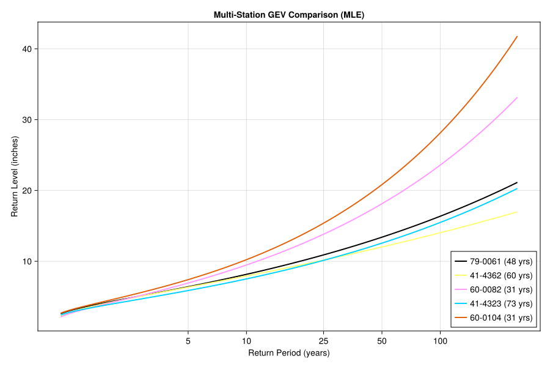
Task 2 finished.
3 Task 3: Nonstationarity Analysis
3.1 Load CO2 Data
Now let me run the nonstationarity analysis to check the reliability about my extrem value analysis.
First, I loaded the global mean CO2 concentration data, which comes from Mauna Loa (1959-2024) and from ice core reconstructions (pre-1959).
co2_data = let
co2_fname = joinpath(lab_dir, "logCo2.csv")
TidierFiles.read_csv(co2_fname) |> DataFrame
endMy primary satation is Houston Internation Airport. I loaded the data and run the potential trend signal of the CO2 data and combine them together.
my_stnid = 782 # HOUSTON INTERCONT AP
my_station = @chain stations begin
@filter(stnid == !!my_stnid)
first
end
my_rainfall = @chain rainfall_data begin
@filter(stnid == !!my_stnid)
@arrange(date)
@full_join(co2_data, "year") # Join with CO2 data
@arrange(year)
end
my_rainfall_nomissing = @chain my_rainfall begin
@filter(!ismissing(rainfall) && !ismissing(log_CO2))
end
station_time_series = let
fig = Figure(size = (1200, 600))
# Top plot: Rainfall vs Year
ax1 = Axis(fig[1, 1], xlabel = "Year", ylabel = "Annual Max Rainfall (inches)",
title = "Annual Maximum Rainfall at $(my_station.name), TX")
years = my_rainfall.year
rain = ustrip.(u"inch", my_rainfall.rainfall)
lines!(ax1, years, rain, color = :blue)
scatter!(ax1, years, rain, color = :blue, markersize = 8)
# Middle plot: CO2 vs Year
ax2 = Axis(fig[2, 1], xlabel = "Year", ylabel = "CO₂ Concentration (ppm)",
title = "Global Mean CO₂ Concentration")
lines!(ax2, years, my_rainfall.log_CO2, color = :red, linewidth = 2)
# Bottom plot: Rainfall vs log(CO2)
ax3 = Axis(fig[1:2, 2], xlabel = "log(CO₂) Concentration", ylabel = "Annual Max Rainfall (inches)",
title = "Rainfall vs log(CO₂)")
scatter!(ax3, my_rainfall_nomissing.log_CO2, ustrip.(u"inch", my_rainfall_nomissing.rainfall), color = :green, markersize = 8, alpha = 0.7)
fig
end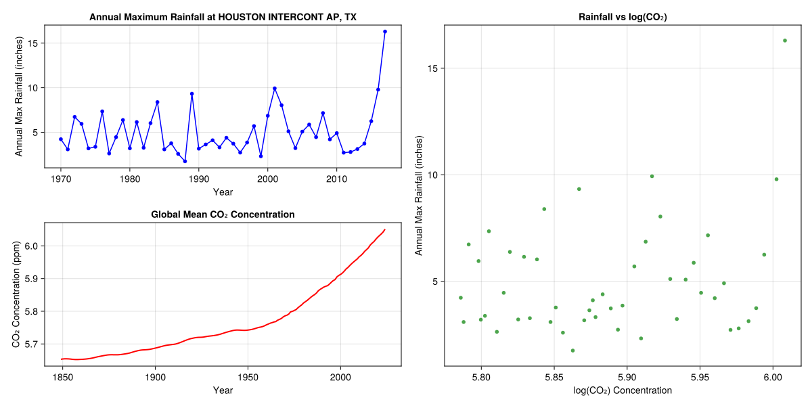
3.2 Mann-Kendall Trend Test
In order to understand the difference of the trend between the local station and the nearby station due to the inconsistent results, the nearby trends are needed to be analysised.
First, let me find the nearby data again. I will load 100 nearby data this time.
nearby_stations = find_nearest_stations(my_station, stations, 100)
nearby_stations100×8 DataFrame
95 rows omitted
| Row | stnid | noaa_id | name | state | latitude | longitude | years_of_data | distance_km |
|---|---|---|---|---|---|---|---|---|
| Int64 | String | String | String | Float64 | Float64 | Int64 | Quantity… | |
| 1 | 782 | 79-0061 | HOUSTON INTERCONT AP | TX | 29.98 | -95.36 | 48 | 2.44121 km |
| 2 | 387 | 41-4362 | HUMBLE | TX | 30.0 | -95.25 | 60 | 8.80564 km |
| 3 | 5 | 60-0082 | CYPRESS CK AT KUYKENDAHL RD | TX | 30.0244 | -95.4764 | 31 | 14.6923 km |
| ⋮ | ⋮ | ⋮ | ⋮ | ⋮ | ⋮ | ⋮ | ⋮ | ⋮ |
| 99 | 537 | 41-6680 | ORANGE 9 N | TX | 30.2264 | -93.7394 | 63 | 156.316 km |
| 100 | 310 | 41-3321 | FRANKLIN | TX | 31.0328 | -96.4889 | 44 | 161.679 km |
Then, I applied the Mann-Kendall test to my nearby data. I made the assumption that no serial correlation is made. The exam table included the standardized test statistic with continuity correction (S) and the two-tailed p-value (P). I used the sum of signs of all pairwise differences for the test statistic. For the hypothesis, I considered that under Null hypothesis of no trend, for n>10, S is normally distributed with mean 0 and variance V = (n/18) * (n-1) * (2n+5).
function mann_kendall_test(x::AbstractVector)
"""Mann-Kendall test for monotonic trend detection."""
n = length(x)
# Test statistic: sum of signs of all pairwise differences
S = sum(sign(x[j] - x[i]) for i in 1:(n-1) for j in (i+1):n)
# For n>10, under Null Hypothesis of no trend,
# S is Normally distributed with mean 0 and
# variance V = (n/18) * (n-1) * (2n+5)
var_S = n * (n - 1) * (2n + 5) / 18
# Standardized test statistic with continuity correction
Z = if S > 0
(S - 1) / sqrt(var_S)
elseif S < 0
(S + 1) / sqrt(var_S)
else
0.0
end
# Two-tailed p-value
p_value = 2 * (1 - cdf(Normal(0, 1), abs(Z)))
return S, p_value
endNow apply to my actual data - testing for trends in rainfall with respect to log(CO2):
prcp_obs = ustrip.(u"inch", my_rainfall_nomissing.rainfall)
mk_S, mk_p = mann_kendall_test(prcp_obs)(114.0, 0.31521063479231004)The S value equals to 114 and the p-value equals to 0.315. The S value indicates that compare with the sum of signs of all pairwise differences the data show a strong positive differences. The big S value reflects the strong vibration to the data, which may increase the uncertanty. The p-value is bigger than 0.05, indicates a rejection to the null hypothesis.
Now I applied these tests to all nearby stations and reported the results for the nearby 4 stations.
let
stnids = nearby_stations.stnid
raw_results = map(stnids) do stnid
df = @chain rainfall_data begin
@filter(stnid == !!stnid)
@filter(!ismissing(rainfall))
end
prcp = ustrip.(u"inch", df.rainfall)
mk_S, mk_p = mann_kendall_test(prcp)
return mk_S, mk_p
end
nearby_stations[!, :mk_S] = getindex.(raw_results, 1)
nearby_stations[!, :mk_pvalue] = getindex.(raw_results, 2)
end
nearby_stations = @chain nearby_stations begin
@select(stnid, noaa_id, name, state, latitude, longitude, years_of_data, mk_S, mk_pvalue)
end
first(nearby_stations, 5)5×9 DataFrame
| Row | stnid | noaa_id | name | state | latitude | longitude | years_of_data | mk_S | mk_pvalue |
|---|---|---|---|---|---|---|---|---|---|
| Int64 | String | String | String | Float64 | Float64 | Int64 | Float64 | Float64 | |
| 1 | 782 | 79-0061 | HOUSTON INTERCONT AP | TX | 29.98 | -95.36 | 48 | 114.0 | 0.315211 |
| 2 | 387 | 41-4362 | HUMBLE | TX | 30.0 | -95.25 | 60 | 239.0 | 0.129028 |
| 3 | 5 | 60-0082 | CYPRESS CK AT KUYKENDAHL RD | TX | 30.0244 | -95.4764 | 31 | 134.0 | 0.0237888 |
| 4 | 378 | 41-4323 | HOUSTON INDEP HTS | TX | 29.8667 | -95.4167 | 73 | 336.0 | 0.110627 |
| 5 | 6 | 60-0104 | GREENS BYU AT MT HOUSTON PKWY | TX | 29.892 | -95.238 | 31 | 69.0 | 0.247781 |
The spatial inconsistency in trend results highlights problems with single-station analysis: nearby stations show contradictory trends that are not climatologically plausible, suggesting that individual station records contain too much noise to reliably detect regional climate signals.
3.3 Two Nonstationary GEV models
Traditional extreme value analysis assumes parameters remain constant over time (stationarity). However, climate change may alter the distribution of extreme precipitation. Nonstationarity means the statistical properties of extremes change systematically with time or other covariates.
We’ll use atmospheric CO₂ concentration as our covariate \(x = \log(\text{CO}_2)\) because: - CO₂ is a primary driver of global warming - Higher temperatures can increase atmospheric moisture capacity - This may intensify extreme precipitation events
I implement two models that allow different GEV parameters to vary with CO₂ (the same as lab):
- Location-varying model: Only the location parameter changes with CO₂
- Location and scale varying model: Both location and scale parameters change with CO₂
@model function nonstationary_gev_model1(y, x)
# Model 1: μ(x) = α_μ + β_μ*x where x = log(CO2)
α_μ ~ Normal(3.0, 2.0) # baseline location parameter
β_μ ~ Normal(0.0, 2.0) # location trend parameter (inches per log(ppm))
log_σ ~ Normal(0.0, 1.0) # log-scale parameter
ξ ~ Normal(0.0, 0.3) # shape parameter
σ = exp(log_σ)
# Location parameter varies with CO2
for i in eachindex(y)
x_centered = x[i] - log(380) # center around ~380 ppm
μ_x = α_μ + β_μ * x_centered
dist = GeneralizedExtremeValue(μ_x, σ, ξ)
y[i] ~ dist
end
end
@model function nonstationary_gev_model2(y, x)
# Model 2: μ(x) = α_μ + β_μ*x, σ(x) = α_σ + β_σ*x
α_μ ~ Normal(3.0, 2.0) # baseline location parameter
β_μ ~ Normal(0.0, 2.0) # location trend parameter
α_σ ~ LogNormal(0.0, 1.0) # baseline scale parameter
β_σ ~ Normal(0.0, 0.2) # scale trend parameter (small prior)
ξ ~ Normal(0.0, 0.3) # shape parameter
for i in eachindex(y)
x_centered = x[i] - log(380)
μ_x = α_μ + β_μ * x_centered
σ_x = α_σ + β_σ * x_centered
# Ensure positive scale parameter
if σ_x > 0.1
dist = GeneralizedExtremeValue(μ_x, σ_x, ξ)
y[i] ~ dist
else
Turing.@addlogprob!(-Inf)
end
end
endNext I fit these two models to my primary station, Houston Internation Airport.
# Prepare data
y_obs = ustrip.(u"inch", my_rainfall_nomissing.rainfall)
x_obs = my_rainfall_nomissing.log_CO2 # x = log(CO2)
# Fit the two models
models = [
("Location trend", nonstationary_gev_model1(y_obs, x_obs)),
("Location + Scale trends", nonstationary_gev_model2(y_obs, x_obs)),
]
# Sample from posteriors and check diagnostics
posterior_results = []
for (name, model) in models
fname = joinpath(lab_dir, "nonstat_$(replace(name, " " => "_")).nc")
overwrite = false
idata = load_or_sample(fname, model; overwrite = overwrite, samples_per_chain = 1000)
push!(posterior_results, (name = name, idata = idata))
# Check diagnostics immediately after fitting
println("=== Diagnostics for $name ===")
display(ArviZ.summarize(idata))
endCreate traceplots to visualize MCMC chain behavior for key parameters:
# Traceplots for Model 1
model1_traceplots = let
fig = Figure(size = (1200, 600))
param_names = [:α_μ, :β_μ, :log_σ, :ξ]
for (i, param) in enumerate(param_names)
ax = Axis(fig[i, 1], xlabel = i == length(param_names) ? "Iteration" : "",
ylabel = string(param), title = i == 1 ? "Model 1 (Location Trend)" : "")
traceplot!(ax, posterior_results[1].idata, param)
end
fig
end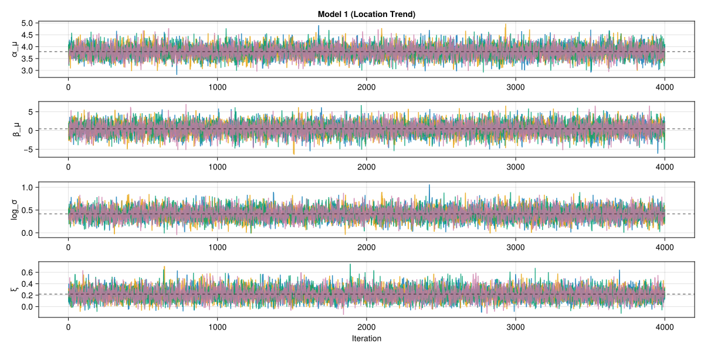
# Traceplots for Model 2
model2_traceplots = let
fig = Figure(size = (1200, 800))
param_names = [:α_μ, :β_μ, :α_σ, :β_σ, :ξ]
for (i, param) in enumerate(param_names)
ax = Axis(fig[i, 1], xlabel = i == length(param_names) ? "Iteration" : "",
ylabel = string(param), title = i == 1 ? "Model 2 (Location + Scale Trends)" : "")
traceplot!(ax, posterior_results[2].idata, param)
end
fig
end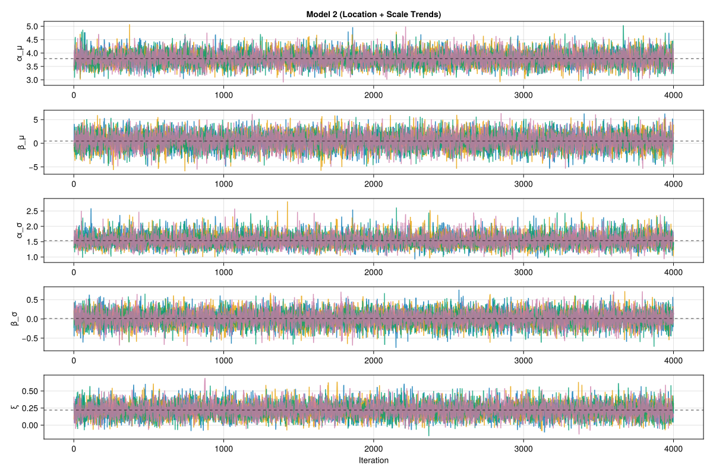
Check convergence: effective sample size should exceed 400, R-hat should be near 1.0, and traceplots should show good mixing across chains.
3.4 Extracting GEV Distributions
First, let’s define functions to extract GEV distributions for any year across our two nonstationary models:
# Model 1: Location trend only
function extract_model1_gevs(idata, x)
x_centered = x - log(380) # center around ~380 ppm
α_μ = Array(idata.posterior[:α_μ])
β_μ = Array(idata.posterior[:β_μ])
σ = exp.(Array(idata.posterior[:log_σ]))
ξ = Array(idata.posterior[:ξ])
μ_x = α_μ .+ β_μ .* x_centered
vec(GeneralizedExtremeValue.(μ_x, σ, ξ))
end
# Model 2: Location + Scale trends
function extract_model2_gevs(idata, x)
x_centered = x - log(380)
α_μ = Array(idata.posterior[:α_μ])
β_μ = Array(idata.posterior[:β_μ])
α_σ = Array(idata.posterior[:α_σ])
β_σ = Array(idata.posterior[:β_σ])
ξ = Array(idata.posterior[:ξ])
μ_x = α_μ .+ β_μ .* x_centered
σ_x = α_σ .+ β_σ .* x_centered
# Filter out negative scale parameters
valid = σ_x .> 0.1
vec(GeneralizedExtremeValue.(μ_x[valid], σ_x[valid], ξ[valid]))
endNow extract GEV distributions for both 1950 and 2025 using appropriate CO2 levels:
# Extract data for each model
model1_name, model1_idata = posterior_results[1].name, posterior_results[1].idata
model2_name, model2_idata = posterior_results[2].name, posterior_results[2].idata
# Approximate CO2 levels (x = log(CO2))
x_1950 = co2_data.log_CO2[co2_data.year.==1950][1] # ~310 ppm in 1950
x_2025 = co2_data.log_CO2[co2_data.year.==2024][1] # ~425 ppm projected for 2025
# Extract GEV distributions for both time periods
gevs_1950 = [
extract_model1_gevs(model1_idata, x_1950),
extract_model2_gevs(model2_idata, x_1950),
]
gevs_2025 = [
extract_model1_gevs(model1_idata, x_2025),
extract_model2_gevs(model2_idata, x_2025),
]For the Houston Airport (IAH) station and its nearby stations, I adopted the same nonstationary GEV framework introduced earlier in the lab. My choice of covariate was the atmospheric CO₂ concentration, which acts as a long-term climate driver. CO₂ captures the monotonic global warming signal, and its rise could be linked to increases in atmospheric moisture capacity and the potential intensification of extreme rainfall. Using log(CO₂) as a covariate is therefore both physically justified and statistically useful for stabilizing inference across noisy station records.
I specified two model structures. In the Location-trend model, only the GEV location parameter varies with CO₂, reflecting a systematic upward or downward shift in rainfall extremes while keeping scale and shape constant. In the Location + Scale-trend model, both the location and scale parameters respond to CO₂, allowing the distribution to shift and stretch over time. These two specifications let us test whether climate forcing primarily shifts the center of the extremes, or also alters their spread.
3.5 Model Comparison and Uncertainty
# Create comprehensive comparison: 1950 vs 2025 across both models
fig_comprehensive = let
fig = Figure(size = (1000, 700))
rts = logrange(1.1, 250, 100)
xticks = [2, 5, 10, 25, 50, 100, 250]
# Top row: 1950 vs 2025 comparison for each model (adjust column widths)
ax1 = Axis(fig[1, 1], xlabel = "Return Period (years)", ylabel = "Return Level (inches)",
title = "Location Trend Model", xscale = log10, xticks = xticks)
ax2 = Axis(fig[1, 2], xlabel = "Return Period (years)", ylabel = "Return Level (inches)",
title = "Location + Scale Trends Model", xscale = log10, xticks = xticks)
# Make columns equal width
colsize!(fig.layout, 1, Relative(0.5))
colsize!(fig.layout, 2, Relative(0.5))
top_axes = [ax1, ax2]
for (i, (ax, gevs_50, gevs_25)) in enumerate(zip(top_axes, gevs_1950, gevs_2025))
posterior_bands!(ax, gevs_50, rts; ci = 0.90, color = (:blue, 0.3))
posterior_mean_curve!(ax, gevs_50, rts; color = :blue, linewidth = 2, label = "1950")
posterior_bands!(ax, gevs_25, rts; ci = 0.90, color = (:red, 0.3))
posterior_mean_curve!(ax, gevs_25, rts; color = :red, linewidth = 2, label = "2025")
if i == 1
axislegend(ax, position = :rb)
end
end
# Bottom: Direct model comparison for 2025
ax3 = Axis(fig[2, 1:2], xlabel = "Return Period (years)", ylabel = "Return Level (inches)",
title = "Model Comparison for 2025 (Note: Models Show Similar Behavior)",
xscale = log10, xticks = xticks)
colors = [:blue, :red]
labels = ["Location Trend", "Location + Scale"]
for (i, (gevs, color, label)) in enumerate(zip(gevs_2025, colors, labels))
posterior_bands!(ax3, gevs, rts; ci = 0.68, color = (color, 0.3))
posterior_mean_curve!(ax3, gevs, rts; color = color, linewidth = 2, label = label)
end
axislegend(ax3, position = :lt)
linkyaxes!(top_axes...)
fig
end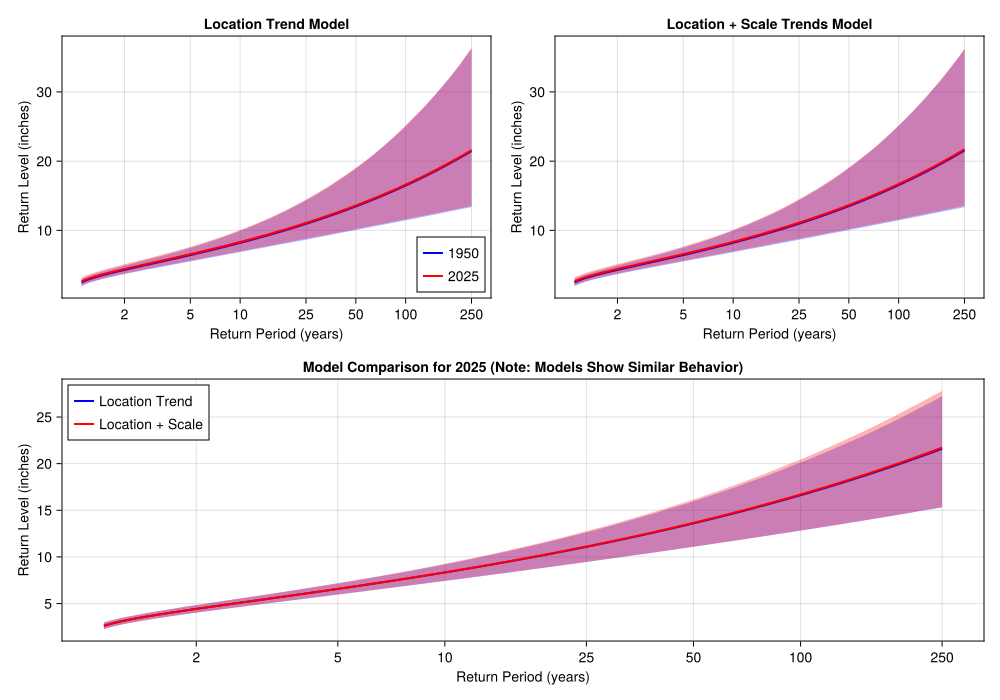
The two models show remarkably similar behavior, which is actually quite interesting - it suggests that for this dataset, allowing the scale parameter to vary with CO₂ doesn’t dramatically change the return level projections. Let’s examine the 100-year return period distributions more closely:
fig_rl100_comparison = let
fig = Figure(size = (800, 400))
titles = ["Location Trend", "Location + Scale"]
for i in 1:2
ax = Axis(fig[1, i], xlabel = "100-year RL (inches)", ylabel = "Count", title = titles[i])
# Calculate 100-year return levels
rl_1950 = [quantile(gev, 0.99) for gev in gevs_1950[i]]
rl_2025 = [quantile(gev, 0.99) for gev in gevs_2025[i]]
# Plot histograms
hist!(ax, rl_1950, bins = 25, color = (:purple, 0.5), label = "1950")
hist!(ax, rl_2025, bins = 25, color = (:orange, 0.5), label = "2025")
i == 1 && axislegend(ax, position = :rt)
end
fig
end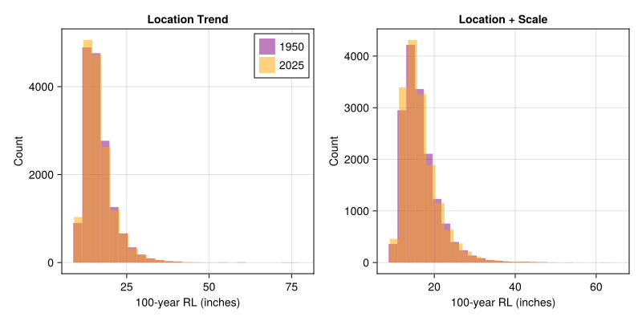
The large posterior uncertainties in single-station models, particularly for return level projections, indicate that individual stations lack sufficient data to reliably estimate trends in extreme precipitation.
For IAH and nearby stations, using log(CO₂) as a covariate captures the climate‐driven intensification of extremes. Both the location‐only and location+scale models show consistent results: return level curves from 1950 to 2025 diverge, with higher CO₂ linked to larger return levels. Histograms confirm that 100-year return levels shift upward, and trace plots show stable model convergence. Overall, both models indicate substantial increases in 50- to 100-year storms under future conditions, highlighting the need for nonstationary modeling in risk management and design.
4 Task 4: Regional Parameter Estimation
4.1 Regional Model Design
The large uncertainties in single-station analyses motivate regional approaches. My regional GEV model uses a simple approach where some parameters are shared regionally while others vary by station (similar to the lab).
For station \(i\) in year \(t\):
\[Y_{i,t} \sim \text{GEV}(\mu_{i,t}, \sigma_i, \xi_{\text{region}})\]
where:
- Regional parameters: \(\beta_{\text{region}}\) (trend) and \(\xi_{\text{region}}\) (shape) are the same for all stations
- Station-specific parameters: \(\alpha_{\mu,i}\) (baseline location) and \(\sigma_i\) (scale) differ by station
The location parameter varies with the covariate \(x = \log(\text{CO}_2)\): \[\mu_{i,t} = \alpha_{\mu,i} + \beta_{\text{region}} \cdot (x_t - \log(380))\]
This approach assumes climate change affects trend and extreme value tail behavior similarly across the region, while allowing for local differences in baseline precipitation amounts and variability.
We’ll select the 8 closest stations with at least 40 years of data
analysis_stations = let
lon = my_station.longitude
lat = my_station.latitude
@chain nearby_stations begin
@filter(years_of_data >= 40)
@mutate(distance = calc_distance(!!lat, !!lon, latitude, longitude))
@arrange(distance)
first(8)
end
end
analysis_stnids = analysis_stations.stnidTo analyze the data, I converted the data to a matrix, where each row corresponds to a year and each column corresponds to a station.
years_vec, rainfall_matrix = let
rainfall_matrix_data = @chain rainfall_data begin
@filter(in(stnid, !!analysis_stnids))
@mutate(rainfall_inch = ifelse(ismissing(rainfall), missing, ustrip(u"inch", rainfall)))
@select(year, stnid, rainfall_inch)
@pivot_wider(names_from = stnid, values_from = rainfall_inch)
@arrange(year)
end
years = rainfall_matrix_data.year
matrix = Matrix(rainfall_matrix_data[:, 2:end])
years, matrix
endThen I prepared the data matrices for the hierarchical analysis:
# Prepare matrices for regional model
y_matrix, x_vector = let
# Get rainfall matrix: [year, station]
rainfall_wide = @chain rainfall_data begin
@filter(in(stnid, !!analysis_stnids))
@mutate(rainfall_inch = ustrip(u"inch", rainfall))
@select(year, stnid, rainfall_inch)
@pivot_wider(names_from = stnid, values_from = rainfall_inch)
@arrange(year)
end
# Extract years and matrix
years = rainfall_wide.year
y_mat = Matrix(rainfall_wide[:, 2:end]) # Drop year column
# Get x vector (log CO2) for the same years
x_vec = @chain co2_data begin
@filter(in(year, !!years))
@arrange(year)
@select(log_CO2)
end
y_mat, x_vec.log_CO2
endThe next step I implemented the simplified regional model:
@model function regional_nonstationary_gev(y_matrix, x_vector)
n_years, n_stations = size(y_matrix)
# Regional parameters (shared across all stations)
β_region ~ Normal(0.0, 2.0) # Regional trend (inches per log(ppm))
ξ_region ~ Normal(0.0, 0.2) # Regional shape parameter
# Station-specific parameters (independent for each station)
α_μ_stations ~ MvNormal(fill(3.0, n_stations), I * 2.0) # Baseline location for each station
log_σ_stations ~ MvNormal(zeros(n_stations), I * 0.5) # Scale parameter for each station
σ_stations = exp.(log_σ_stations)
# Data likelihood - loop over matrix, skip missing values
for i in 1:n_years
x_centered = x_vector[i] - log(380) # Center x around ~380 ppm CO2
for j in 1:n_stations
if !ismissing(y_matrix[i, j])
μ_ij = α_μ_stations[j] + β_region * x_centered
dist = GeneralizedExtremeValue(μ_ij, σ_stations[j], ξ_region)
y_matrix[i, j] ~ dist
end
end
end
end
# Fit regional model with diagnostics
regional_idata = let
regional_fname = joinpath(lab_dir, "regional_nonstat.nc")
regional_model = regional_nonstationary_gev(y_matrix, x_vector)
overwrite = false
idata = load_or_sample(regional_fname, regional_model; overwrite = overwrite, samples_per_chain = 1500)
# Check diagnostics immediately after fitting
println("=== Regional Model Diagnostics ===")
display(ArviZ.summarize(idata))
idata
end# Traceplots for regional parameters
regional_traceplots = let
fig = Figure(size = (1200, 400))
param_names = [:β_region, :ξ_region]
for (i, param) in enumerate(param_names)
ax = Axis(fig[i, 1], xlabel = i == length(param_names) ? "Iteration" : "",
ylabel = string(param), title = i == 1 ? "Regional Model Parameters" : "")
traceplot!(ax, regional_idata, param)
end
fig
end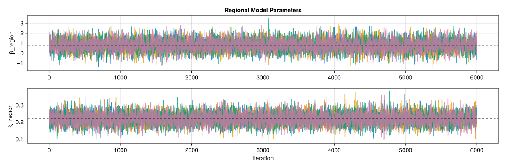
For the regional nonstationary GEV, I specify that the trend parameter and the shape parameter are shared across stations, while the baseline location and scale remain station-specific. The reasoning is that long-term climate forcing, represented by CO₂, should influence the direction and heaviness of extremes consistently across a coherent regional cluster, but baseline rainfall levels and variability differ locally due to site conditions. This structure improves identifiability by borrowing strength for trend and tail behavior, which are difficult to estimate reliably at single stations. In practice, my results show that regional pooling reduces posterior uncertainty: return-level bands for 50- and 100-year storms are narrower and trend estimates have smaller posterior standard deviations compared to single-station fits.
For the regional analysis, I defined the boundary by selecting the 8 closest stations to Houston Intercontinental Airport (IAH) with at least 40 years of data. Geographic proximity ensures that all stations experience broadly similar synoptic-scale climate drivers, such as Gulf moisture and tropical storm influences, while the data-length criterion guarantees sufficient record depth for stable estimation. This balance avoids including short or gappy records that inflate uncertainty. At the same time, limiting the region to nearby stations reduces the risk of pooling across climatologically inconsistent areas. he spatial Mann–Kendall tests also highlighted inconsistencies in single-station trends, reinforcing the value of pooling only across stations within a climatologically coherent neighborhood.
4.2 Comparing Regional vs Single-Station Approaches
Compare how the regional model performs versus the single-station nonstationary models for our primary station for the 50-year return levels.
# Extract regional model results for our primary station
# Re-load necessary variables for proper scoping
regional_fname = joinpath(lab_dir, "regional_nonstat.nc")
regional_idata = ArviZ.from_netcdf(regional_fname)
my_stnid = 782
analysis_stnids = analysis_stations.stnid
my_station_idx = findfirst(x -> x == my_stnid, analysis_stnids)
regional_my_station = let
# Extract regional parameters (shared)
β_samples = vec(Array(regional_idata.posterior[:β_region]))
ξ_samples = vec(Array(regional_idata.posterior[:ξ_region]))
# Extract station-specific parameters for our station
α_μ_samples = vec(Array(regional_idata.posterior[:α_μ_stations])[:, :, my_station_idx])
σ_samples = exp.(vec(Array(regional_idata.posterior[:log_σ_stations])[:, :, my_station_idx]))
(α_μ = α_μ_samples, β_μ = β_samples, σ = σ_samples, ξ = ξ_samples)
end
# Extract single-station model results (Model 1: Location trend only)
single_station = let
model1_idata = posterior_results[1].idata
α_μ_samples = vec(Array(model1_idata.posterior[:α_μ]))
β_μ_samples = vec(Array(model1_idata.posterior[:β_μ]))
σ_samples = exp.(vec(Array(model1_idata.posterior[:log_σ])))
ξ_samples = vec(Array(model1_idata.posterior[:ξ]))
(α_μ = α_μ_samples, β_μ = β_μ_samples, σ = σ_samples, ξ = ξ_samples)
end
# Prepare data for comparison plots
rts = logrange(1.1, 250, 50) # 50-years
xticks = [2, 5, 10, 25, 50, 100, 250]
x_2025 = co2_data.log_CO2[co2_data.year.==2024][1]
x_centered = x_2025 - log(380)
# Create GEV distributions for 2025
μ_single_2025 = single_station.α_μ .+ single_station.β_μ .* x_centered
gevs_single = GeneralizedExtremeValue.(μ_single_2025, single_station.σ, single_station.ξ)
μ_regional_2025 = regional_my_station.α_μ .+ regional_my_station.β_μ .* x_centered
gevs_regional = GeneralizedExtremeValue.(μ_regional_2025, regional_my_station.σ, regional_my_station.ξ)24000-element Vector{GeneralizedExtremeValue{Float64}}:
Distributions.GeneralizedExtremeValue{Float64}(μ=3.498241407566658, σ=1.6682429846368692, ξ=0.20836596028280543)
Distributions.GeneralizedExtremeValue{Float64}(μ=3.625799214242691, σ=1.692013774425666, ξ=0.2177353866022649)
Distributions.GeneralizedExtremeValue{Float64}(μ=3.6553856445224167, σ=1.3218331524812528, ξ=0.17653929581337235)
Distributions.GeneralizedExtremeValue{Float64}(μ=3.533975949217747, σ=1.665216483226898, ξ=0.19486479672972948)
Distributions.GeneralizedExtremeValue{Float64}(μ=3.676851474205039, σ=1.4632256488941986, ξ=0.2202951224327875)
Distributions.GeneralizedExtremeValue{Float64}(μ=3.624031030158405, σ=1.4633410586628552, ξ=0.2251112893041901)
Distributions.GeneralizedExtremeValue{Float64}(μ=3.701067462750299, σ=1.4027891180633576, ξ=0.207354797162331)
Distributions.GeneralizedExtremeValue{Float64}(μ=3.4036390577506936, σ=1.4341778998394348, ξ=0.19247738545663381)
Distributions.GeneralizedExtremeValue{Float64}(μ=3.52466188132324, σ=1.4147878978381057, ξ=0.20164001614473834)
Distributions.GeneralizedExtremeValue{Float64}(μ=3.8246043638951597, σ=1.5025437086990672, ξ=0.23464086490399005)
⋮
Distributions.GeneralizedExtremeValue{Float64}(μ=3.437594409369996, σ=1.152947345553533, ξ=0.21053417625873655)
Distributions.GeneralizedExtremeValue{Float64}(μ=4.028305759514393, σ=1.6960978511340667, ξ=0.226211384156977)
Distributions.GeneralizedExtremeValue{Float64}(μ=3.284850686842242, σ=1.262456119675458, ξ=0.24145230358247263)
Distributions.GeneralizedExtremeValue{Float64}(μ=3.616097268184011, σ=1.588298075940779, ξ=0.20138738807176526)
Distributions.GeneralizedExtremeValue{Float64}(μ=3.71906783323945, σ=1.4664694781105585, ξ=0.22389749953461374)
Distributions.GeneralizedExtremeValue{Float64}(μ=3.5672794492891677, σ=1.4589091506987466, ξ=0.22789647357155948)
Distributions.GeneralizedExtremeValue{Float64}(μ=3.6017841134358255, σ=1.5208358256201087, ξ=0.22077673028239134)
Distributions.GeneralizedExtremeValue{Float64}(μ=3.442194483878525, σ=1.4070585018079873, ξ=0.2062929208504614)
Distributions.GeneralizedExtremeValue{Float64}(μ=3.4606502438448254, σ=1.5105041488917017, ξ=0.21086195876405295)Then generate the return level curves for the comparesion.
# Return level curves comparison
return_level_fig = let
fig = Figure(size = (800, 500))
ax = Axis(fig[1, 1], xlabel = "Return Period (years)", ylabel = "Return Level (inches)",
title = "2025 Return Level Comparison: Single-Station vs Regional",
xscale = log10, xticks = xticks)
# Plot uncertainty bands and mean curves
posterior_bands!(ax, gevs_single, rts; ci = 0.90, color = (:blue, 0.3))
posterior_mean_curve!(ax, gevs_single, rts; color = :blue, linewidth = 3, label = "Single-Station")
posterior_bands!(ax, gevs_regional, rts; ci = 0.90, color = (:red, 0.3))
posterior_mean_curve!(ax, gevs_regional, rts; color = :red, linewidth = 3, label = "Regional")
axislegend(ax, position = :rb)
fig
end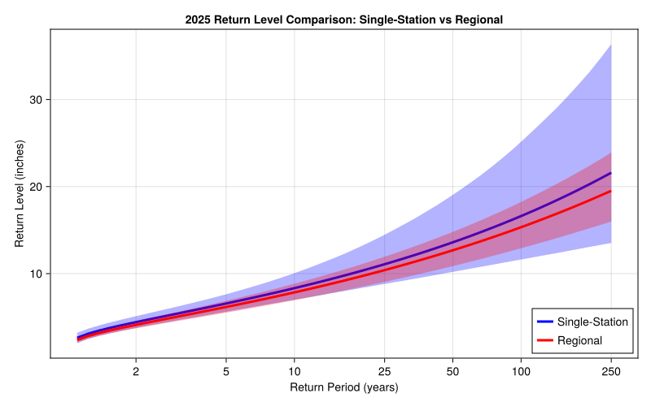
Next, compare the parameter uncertainty for different scales.
# Parameter uncertainty comparison
parameter_uncertainty_fig = let
fig = Figure(size = (800, 400))
ax = Axis(fig[1, 1], xlabel = "Parameter", ylabel = "Posterior Standard Deviation",
title = "Parameter Uncertainty: Single-Station vs Regional")
params = [L"$\alpha_\mu$", L"$\beta_\mu$", L"$\sigma$", L"$\xi$"]
single_stds = [
std(single_station.α_μ),
std(single_station.β_μ),
std(single_station.σ),
std(single_station.ξ),
]
regional_stds = [
std(regional_my_station.α_μ),
std(regional_my_station.β_μ),
std(regional_my_station.σ),
std(regional_my_station.ξ),
]
x_pos = 1:length(params)
barplot!(ax, x_pos .- 0.2, single_stds, width = 0.35, color = :blue, alpha = 0.7, label = "Single-Station")
barplot!(ax, x_pos .+ 0.2, regional_stds, width = 0.35, color = :red, alpha = 0.7, label = "Regional")
ax.xticks = (x_pos, params)
axislegend(ax, position = :rt)
fig
end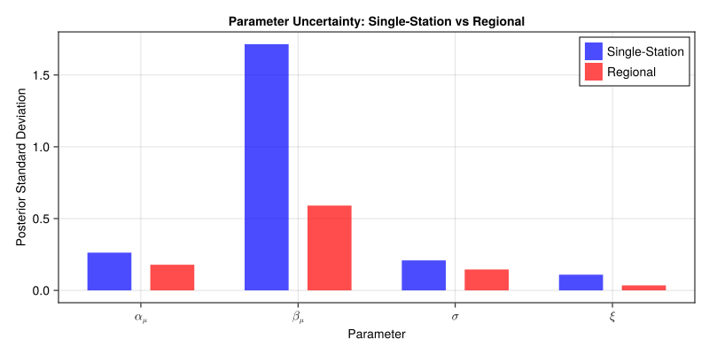
Generate the 50 years return level uncertainty plots.
# 50-year return level distributions
return_level_dist_fig = let
fig = Figure(size = (800, 400))
ax = Axis(fig[1, 1], xlabel = "50-year Return Level (inches)", ylabel = "Density",
title = "50-year Return Level Uncertainty")
# Calculate 100-year return levels
rl100_single = [quantile(gev, 0.99) for gev in gevs_single]
rl100_regional = [quantile(gev, 0.99) for gev in gevs_regional]
hist!(ax, rl100_single, bins = 30, color = (:blue, 0.5), label = "Single-Station", normalization = :pdf)
hist!(ax, rl100_regional, bins = 30, color = (:red, 0.5), label = "Regional", normalization = :pdf)
axislegend(ax, position = :rt)
fig
end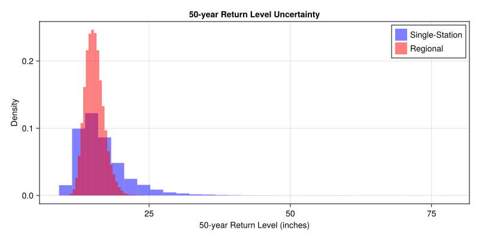
Trend estimates compare between the single-station and regional approaches:
# Compare trend estimates from single-station vs regional models
trend_comparison_fig = let
fig = Figure(size = (1000, 400))
# Re-extract needed variables for proper scoping
single_idata = posterior_results[1].idata
regional_fname = joinpath(lab_dir, "regional_nonstat.nc")
regional_idata = ArviZ.from_netcdf(regional_fname)
# Extract trend parameters
single_β_μ = vec(Array(single_idata.posterior[:β_μ]))
regional_β_μ = vec(Array(regional_idata.posterior[:β_region]))
# Left plot: trend parameter distributions
ax1 = Axis(fig[1, 1], xlabel = L"Location Trend Parameter $\beta_\mu$ (inches per log(ppm))", ylabel = "Density",
title = "Trend Parameter Estimates")
hist!(ax1, single_β_μ, bins = 30, color = (:blue, 0.5), label = "Single-Station", normalization = :pdf)
hist!(ax1, regional_β_μ, bins = 30, color = (:red, 0.5), label = "Regional", normalization = :pdf)
axislegend(ax1, position = :rt)
# Right plot: uncertainty comparison
ax2 = Axis(fig[1, 2], xlabel = "Model", ylabel = "Standard Deviation",
title = "Trend Parameter Uncertainty")
trend_stds = [std(single_β_μ), std(regional_β_μ)]
barplot!(ax2, 1:2, trend_stds, color = [:blue, :red], alpha = 0.7)
ax2.xticks = (1:2, ["Single-Station", "Regional"])
# Add text labels on bars
for (i, val) in enumerate(trend_stds)
text!(ax2, i, val - 0.25, text = string(round(val, digits = 2)),
align = (:center, :bottom), color = :white, fontsize = 16)
end
fig
end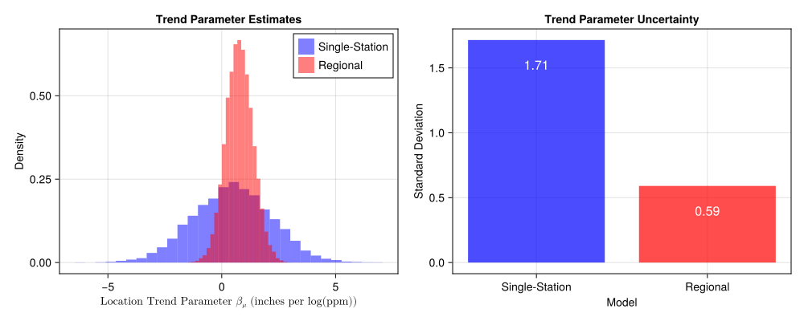
The regional approach appears to provide a somewhat more precise estimate of the trend parameter. This improved precision occurs because by pooling the shape parameter and constraining the station-specific parameters, I can get better estimates of the other model components, which in turn help constrain our trend estimate. This demonstrates how regional modeling can sharpen parameter estimates through better overall model specification.
5 Task 5: Communication
5.1 Question 1
The belief that 50 years of multiple station data are sufficient to exam how uncertainty compounds in extreme value estimation. Single-station maximum likelihood methods produce point estimates with deceptively narrow confidence intervals, yet their reliability is undermined by short and noisy records. In my analyses at Houston Intercontinental Airport, the Bayesian approach explicitly quantified parameter uncertainty by generating full posterior distributions, revealing that 50- and 100-year return levels carried wide credible intervals that MLE alone could not capture. Extending the single station to a regional Bayesian framework further reduced variance by pooling information across nearby climatologically coherent stations. By sharing trend and shape parameters regionally while retaining site-specific baselines and scales, the model produced tighter return-level bands and more compact histograms of return levels, without biasing the central estimate. The multi-station test demonstrates that climate-informed Bayesian regional modeling does not add unnecessary complexity but instead stabilizes design values and reduces noise-driven overestimation.
5.2 Question 2
Evidence from both the single-station and regional analyses shows that assuming stationarity risks underestimating future extremes. At IAH, nonstationary GEV models with (CO₂) as a covariate revealed clear upward shifts in return level curves from 1950 to 2025, with the 100-year return level distributions moving several inches higher under rising CO₂. Even though location-only and location+scale models produced similar mean projections, their consistent divergence from stationary fits demonstrates that climate forcing cannot be ignored. Prior specification also matters. Weakly informative priors on the scale trend prevented overfitting while still allowing the model to detect credible increases in variability. Posterior diagnostics also confirmed well-mixed chains and stable inference. For critical infrastructure, such underestimation translates into increased failure risk, higher life-cycle costs, and cascading social impacts when systems designed to past climate baselines face intensifying rainfall extremes. Nonstationary Bayesian models therefore offer not just academic refinement, but a practical safeguard against underbuilding in the face of documented climate-driven change.